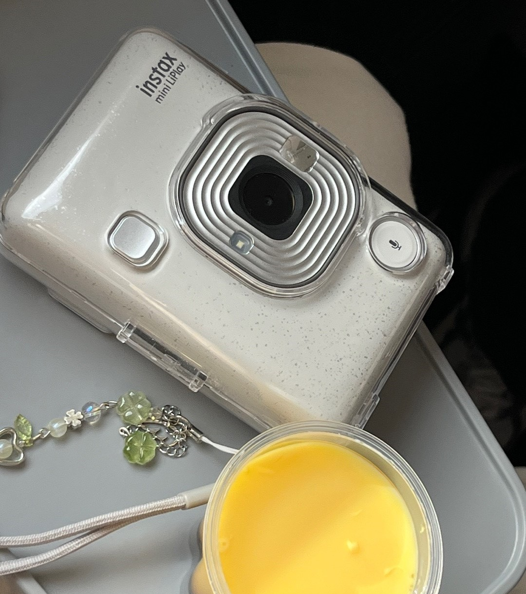

제 카메라를 소개합니다 !

인스탁스 미니 리플레이 - StoneWhite 색상
- 폴라로이드 선택적 인쇄
일반적인 폴라로이드와는 다르게 인쇄할 사진을 선택할 수 있습니다.
스마트폰으로 찍은 사진 또한 인쇄 가능합니다.
- 녹음 기능
녹음된 소리를 QR 코드로 변환하고 사진 위에 인쇄할 수 있습니다.
스마트폰으로 QR 코드를 스캔하여 소리를 재생하고 순간을 다시 체험할 수 있습니다.
- 프레임 & 필터
커스텀 가능한 프레임과 필터 효과로 다양하게 즐길 수 있습니다.
스마트폰으로 편집가능하며 자주 쓰는 프레임은 카메라 좌측 버튼에 3개까지 등록 가능합니다.